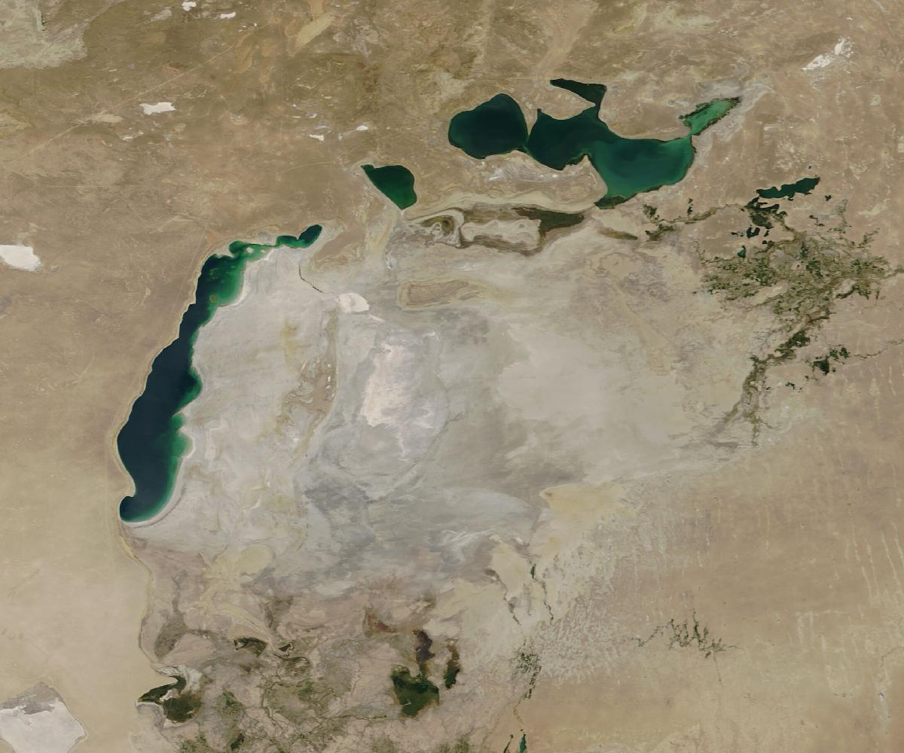
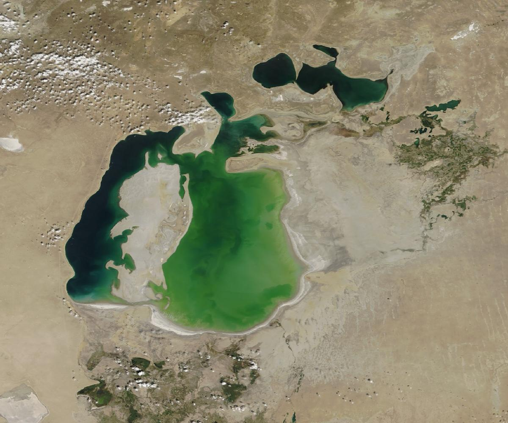

Idea
Advice about crop rotation is usually general: diversify, keep the soil covered. A crash test is specific. You enter your rotation, and it is driven through every real season since 1982 on your field, using NASA weather. You see which years would have wrecked it and why. The tool then searches hundreds of alternatives and shows the smallest change that makes the farm more profitable, more reliable, better for the soil and more water-efficient, weighted by your priorities.
NASA data
- NASA POWER daily API (Agroclimatology), 1981–2025, for the exact field: maximum and minimum air temperature (MERRA-2), corrected precipitation (MERRA-2 with GPCP correction), all-sky surface solar radiation (CERES SYN1deg / GEWEX SRB), relative humidity and wind at 2 m.
- MERRA-2 root-zone soil wetness (GWETROOT) through POWER, used as an independent check of our soil-water model.
- MODIS Terra imagery through NASA GIBS: 16-day vegetation index (NDVI) on the map for any year since 2000, and true-colour images of the Aral Sea in 2000 and 2014.
- Soil texture and organic carbon from ISRIC SoilGrids 2.0 (250 m). A farmer can replace them with a lab test.
Model
- Daily reference evapotranspiration: FAO-56 Penman-Monteith from the POWER variables. Before 1984, solar radiation is estimated with the FAO-56 Hargreaves formula.
- Two-layer soil water balance, 1.8 m deep. Plant-available water comes from texture (Saxton & Rawls 2006). Runoff uses the SCS curve number. Snow is trapped by stubble and melts by degree-days. Bare-soil evaporation follows the FAO-56 two-stage method.
- Crops: sowing dates are set by temperature, development follows growing degree-days, and water use follows FAO-56 crop coefficients and the water-stress factor. Yield follows the FAO-33 response to water (Ky). Penalties cover heat at flowering, spring and flowering frost, winter-kill of winter wheat under thin snow, not ripening before the autumn frost, and disease when a crop returns too soon.
- Rotation effects: nitrogen credit after legumes, green manure and fallow; a break-crop bonus; a penalty for cereal after cereal.
- Soil organic carbon: an ICBM-type balance of humified straw and root inputs against decomposition driven by temperature and moisture.
- Soil health: the carbon trend plus the four USDA-NRCS principles (keep the soil covered, keep living roots, maximise diversity, minimise disturbance). Erosion-risk days are days with wind of at least 6 m/s or rain of at least 20 mm.
- A crash is a season that loses more than half of the money put into the field; a loss is any season with negative income.
- Climate scenarios: the delta method (+1.5 °C; +2.5 °C and −10% precipitation; "Climate 2050": +2 °C and −10%) applied to the real daily series.
- Next-season outlook: this year's NASA POWER data run through the same water balance. The current soil water and the rain since 1 August are compared with the same date in every past year; the five closest autumns are analogs, and the tool shows how each crop did in the season after them.
- Sowing-date advisor: the whole crash test repeated with each crop sown 1–2 weeks earlier or later. Irrigation curve: the crash test repeated with seasonal quotas from 0 to 800 mm, water costs included.
- Whole farm: per-hectare results multiplied by the farm area; soil carbon converted to CO₂ (× 3.667).
Идея
Советы про севооборот обычно общие: разнообразьте, держите почву закрытой. Краш-тест конкретен. Вы вводите свой севооборот, и он проходит через каждый реальный сезон с 1982 года на вашем поле по погоде NASA. Вы видите, какие годы его разбили бы и почему. Потом сервис перебирает сотни альтернатив и показывает самое маленькое изменение, которое делает хозяйство доходнее, надёжнее, полезнее для почвы и экономнее по воде — с весами, которые задаёте вы.
Данные NASA
- NASA POWER, ежедневный API (Agroclimatology), 1981–2025, для точки поля: максимальная и минимальная температура (MERRA-2), скорректированные осадки (MERRA-2 с коррекцией GPCP), солнечная радиация (CERES SYN1deg / GEWEX SRB), влажность воздуха и ветер на 2 м.
- Влажность корнеобитаемого слоя MERRA-2 (GWETROOT) через POWER — независимая проверка нашей модели почвенной влаги.
- Снимки MODIS Terra через NASA GIBS: индекс растительности NDVI за 16 дней на карте для любого года с 2000-го и снимки Аральского моря в естественных цветах за 2000 и 2014 годы.
- Механический состав и органический углерод почвы — ISRIC SoilGrids 2.0 (250 м). Фермер может заменить их лабораторным анализом.
Модель
- Суточная эталонная эвапотранспирация по Пенману–Монтейту (FAO-56) из переменных POWER. До 1984 года солнечная радиация оценивается по формуле Харгривса (FAO-56).
- Двухслойный водный баланс почвы глубиной 1,8 м. Доступная влага рассчитывается по механическому составу (Saxton & Rawls 2006). Сток считается по кривой SCS. Снег задерживается стернёй и тает по сумме положительных температур. Испарение с голой почвы считается по двухстадийному методу FAO-56.
- Культуры: сроки сева задаются температурой, развитие идёт по сумме активных температур, водопотребление — по коэффициентам FAO-56 и фактору водного стресса. Урожай считается по отклику на воду FAO-33 (Ky). Штрафы учитывают жару в цветение, весенние заморозки и заморозки в цветение, вымерзание озимых под тонким снегом, недозревание до осенних заморозков и болезни при слишком раннем возврате культуры.
- Эффекты севооборота: азот после бобовых, сидератов и пара; бонус хорошего предшественника; штраф за зерновые по зерновым.
- Органический углерод почвы: баланс типа ICBM между гумифицированной соломой и корнями и разложением, которое зависит от температуры и влажности.
- Здоровье почвы: тренд углерода плюс четыре принципа USDA-NRCS (почва закрыта, живые корни, разнообразие, минимум обработки). Опасные для эрозии дни — дни с ветром не меньше 6 м/с или дождём не меньше 20 мм.
- Авария — сезон, потерявший больше половины вложенных в поле денег; убыток — любой сезон с отрицательным доходом.
- Климатические сценарии: метод дельт (+1,5 °C; +2,5 °C и −10% осадков; «Климат 2050»: +2 °C и −10%) к реальным суточным рядам.
- Прогноз на следующий сезон: данные NASA POWER за текущий год проходят через тот же водный баланс. Запас воды в почве и осадки с 1 августа сравниваются с той же датой каждого прошлого года; пять самых похожих осеней — аналоги, и сервис показывает, как каждая культура сработала в сезон после них.
- Советник по срокам сева: весь краш-тест повторяется с севом каждой культуры на 1–2 недели раньше или позже. Кривая полива: краш-тест с лимитами воды от 0 до 800 мм за сезон, с учётом стоимости воды.
- Всё хозяйство: результаты на гектар умножаются на площадь; углерод почвы пересчитывается в CO₂ (× 3,667).
Идея
Ауыспалы егіс туралы кеңестер әдетте жалпы болады: дақылдарды әртүрлендіріңіз, топырақты жабық ұстаңыз. Краш-тест нақты. Сіз өз ауыспалы егісіңізді енгізесіз, ал ол NASA ауа райы бойынша сіздің алқабыңыздағы 1982 жылдан бергі әрбір нақты маусымнан өткізіледі. Қай жылдар оны бұзар еді және неге екенін көресіз. Содан кейін сервис жүздеген баламаны тексеріп, шаруашылықты табыстырақ, сенімдірек, топыраққа пайдалырақ және суды үнемдейтін ететін ең кішкентай өзгерісті көрсетеді. Салмақтарды сіз белгілейсіз.
NASA деректері
- NASA POWER күнделікті API (Agroclimatology), 1981–2025, алқап нүктесі үшін: ауаның ең жоғары және ең төменгі температурасы (MERRA-2), түзетілген жауын-шашын (GPCP түзетуімен MERRA-2), күн радиациясы (CERES SYN1deg / GEWEX SRB), 2 м биіктіктегі ауа ылғалдылығы мен жел.
- POWER арқылы MERRA-2 тамыр қабатының ылғалдылығы (GWETROOT) — топырақ ылғалы моделіміздің тәуелсіз тексерісі.
- NASA GIBS арқылы MODIS Terra суреттері: 2000 жылдан бергі кез келген жыл үшін картадағы 16 күндік өсімдік индексі (NDVI) және 2000 және 2014 жылдардағы Арал теңізінің табиғи түстегі суреттері.
- Топырақтың механикалық құрамы мен органикалық көміртегі — ISRIC SoilGrids 2.0 (250 м). Фермер оларды зертханалық талдаумен ауыстыра алады.
Модель
- POWER айнымалыларынан Пенман–Монтейт (FAO-56) бойынша күнделікті эталондық эвапотранспирация. 1984 жылға дейін күн радиациясы Харгривс формуласымен (FAO-56) бағаланады.
- Тереңдігі 1,8 м екі қабатты топырақ су балансы. Қолжетімді ылғал механикалық құрам бойынша есептеледі (Saxton & Rawls 2006). Ағын SCS қисығымен есептеледі. Қарды аңыз ұстайды, ол оң температуралар қосындысы бойынша ериді. Жалаңаш топырақтан булану FAO-56 екі сатылы әдісімен есептеледі.
- Дақылдар: егу мерзімі температурамен анықталады, даму белсенді температуралар қосындысы бойынша жүреді, су тұтыну FAO-56 коэффициенттері мен су стресі факторы бойынша. Өнім FAO-33 суға жауабы (Ky) бойынша есептеледі. Гүлдену кезіндегі аптап, көктемгі және гүлдену кезіндегі үсік, жұқа қар астында күздік дақылдың үсіп кетуі, күзгі үсікке дейін піспеу және дақыл тым ерте оралғандағы аурулар үшін айыппұлдар бар.
- Ауыспалы егістің әсері: бұршақ тұқымдастардан, сидераттан және сүдігерден кейінгі азот; жақсы алғы дақыл бонусы; дәнді дақылдан кейінгі дәнді дақыл үшін айыппұл.
- Топырақтың органикалық көміртегі: гумустанған сабан мен тамырлар және температура мен ылғалдылыққа тәуелді ыдырау арасындағы ICBM типті баланс.
- Топырақ денсаулығы: көміртегі үрдісі және USDA-NRCS-тің төрт қағидасы (топырақ жабық, тірі тамырлар, әртүрлілік, өңдеу аз). Эрозия қаупі бар күндер — желі кемінде 6 м/с немесе жаңбыры кемінде 20 мм күндер.
- Апат — алқапқа салынған ақшаның жартысынан көбін жоғалтқан маусым; шығын — кірісі теріс кез келген маусым.
- Климаттық сценарийлер: нақты күнделікті қатарларға дельта әдісі (+1,5 °C; +2,5 °C және жауын-шашын −10%; «Климат 2050»: +2 °C және −10%).
- Келесі маусым болжамы: осы жылғы NASA POWER деректері сол су балансынан өтеді. Топырақтағы қазіргі су қоры мен 1 тамыздан бергі жауын-шашын әр өткен жылдың сол күнімен салыстырылады; ең ұқсас бес күз — аналогтар, ал сервис олардан кейінгі маусымда әр дақылдың қалай болғанын көрсетеді.
- Егу мерзімі кеңесшісі: әр дақылды 1–2 апта ерте немесе кеш еккендегі толық краш-тест. Суару қисығы: су құнын ескере отырып, маусымына 0-ден 800 мм-ге дейінгі лимиттермен краш-тест.
- Бүкіл шаруашылық: гектарға шаққандағы нәтижелер шаруашылық ауданына көбейтіледі; топырақ көміртегі CO₂-ге аударылады (× 3,667).